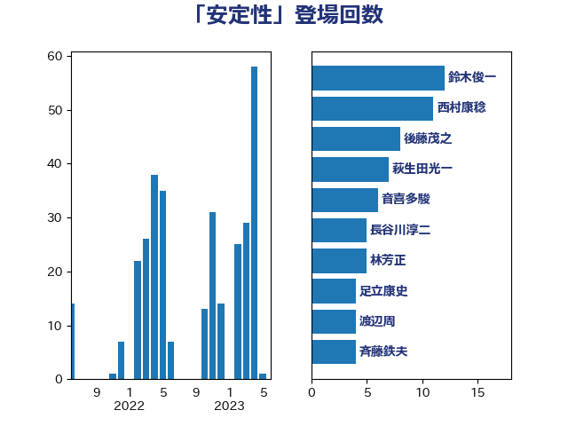

単語「安定性」

| 田村憲久 | 自由民主党 | 11 回 |
| 萩生田光一 | 自由民主党 | 7 回 |
| 吉川沙織 | 立憲民主党 | 6 回 |
| 岸信夫 | 自由民主党 | 6 回 |
| 後藤茂之 | 自由民主党 | 6 回 |
| 斉藤鉄夫 | 公明党 | 5 回 |
| 梶山弘志 | 自由民主党 | 4 回 |
| 足立康史 | 日本維新の会 | 4 回 |
| 吉田宣弘 | 公明党 | 3 回 |
| 山崎誠 | 立憲民主党 | 3 回 |
| 松沢成文 | 日本維新の会 | 3 回 |
| 海江田万里 | 立憲民主党 | 3 回 |
| 石橋通宏 | 立憲民主党 | 3 回 |
| 金子恭之 | 自由民主党 | 3 回 |
| 上川陽子 | 自由民主党 | 2 回 |
| 倉林明子 | 日本共産党 | 2 回 |
| 吉田統彦 | 立憲民主党 | 2 回 |
| 嘉田由紀子 | 無所属 | 2 回 |
| 安江伸夫 | 公明党 | 2 回 |
| 平山佐知子 | 無所属 | 2 回 |
| 柳ヶ瀬裕文 | 日本維新の会 | 2 回 |
| 神谷裕 | 立憲民主党 | 2 回 |
| 秋野公造 | 公明党 | 2 回 |
| 茂木敏充 | 自由民主党 | 2 回 |
| 重徳和彦 | 立憲民主党 | 2 回 |
| 鈴木俊一 | 自由民主党 | 2 回 |
| 長坂康正 | 自由民主党 | 2 回 |
| 音喜多駿 | 日本維新の会 | 2 回 |
| おおつき紅葉 | 立憲民主党 | 1 回 |
| こやり隆史 | 自由民主党 | 1 回 |
| 三浦信祐 | 公明党 | 1 回 |
| 中島克仁 | 立憲民主党 | 1 回 |
| 中曽根康隆 | 自由民主党 | 1 回 |
| 串田誠一 | 日本維新の会 | 1 回 |
| 井上信治 | 自由民主党 | 1 回 |
| 伊佐進一 | 公明党 | 1 回 |
| 佐藤啓 | 自由民主党 | 1 回 |
| 古賀友一郎 | 自由民主党 | 1 回 |
| 坂本哲志 | 自由民主党 | 1 回 |
| 堀場幸子 | 日本維新の会 | 1 回 |
| 安達澄 | 無所属 | 1 回 |
| 室井邦彦 | 日本維新の会 | 1 回 |
| 宮本岳志 | 日本共産党 | 1 回 |
| 小島敏文 | 自由民主党 | 1 回 |
| 小沼巧 | 立憲民主党 | 1 回 |
| 小西洋之 | 立憲民主党 | 1 回 |
| 山下雄平 | 自由民主党 | 1 回 |
| 山岸一生 | 立憲民主党 | 1 回 |
| 山本博司 | 公明党 | 1 回 |
| 山添拓 | 日本共産党 | 1 回 |
| 岸真紀子 | 立憲民主党 | 1 回 |
| 平井卓也 | 自由民主党 | 1 回 |
| 平木大作 | 公明党 | 1 回 |
| 志位和夫 | 日本共産党 | 1 回 |
| 斎藤洋明 | 自由民主党 | 1 回 |
| 早稲田ゆき | 立憲民主党 | 1 回 |
| 末松信介 | 自由民主党 | 1 回 |
| 本村伸子 | 日本共産党 | 1 回 |
| 森山浩行 | 立憲民主党 | 1 回 |
| 森本真治 | 立憲民主党 | 1 回 |
| 櫻井周 | 立憲民主党 | 1 回 |
| 江島潔 | 自由民主党 | 1 回 |
| 泉健太 | 立憲民主党 | 1 回 |
| 浅田均 | 日本維新の会 | 1 回 |
| 浅野哲 | 国民民主党 | 1 回 |
| 渡辺創 | 立憲民主党 | 1 回 |
| 渡辺猛之 | 自由民主党 | 1 回 |
| 熊田裕通 | 自由民主党 | 1 回 |
| 牧原秀樹 | 自由民主党 | 1 回 |
| 牧山ひろえ | 立憲民主党 | 1 回 |
| 田島麻衣子 | 立憲民主党 | 1 回 |
| 田村智子 | 日本共産党 | 1 回 |
| 田村貴昭 | 日本共産党 | 1 回 |
| 石川昭政 | 自由民主党 | 1 回 |
| 磯崎仁彦 | 自由民主党 | 1 回 |
| 福島伸享 | 無所属 | 1 回 |
| 笠井亮 | 日本共産党 | 1 回 |
| 細田健一 | 自由民主党 | 1 回 |
| 美延映夫 | 日本維新の会 | 1 回 |
| 舟山康江 | 国民民主党 | 1 回 |
| 若松謙維 | 公明党 | 1 回 |
| 菅直人 | 立憲民主党 | 1 回 |
| 菅義偉 | 自由民主党 | 1 回 |
| 薗浦健太郎 | 自由民主党 | 1 回 |
| 藤井比早之 | 自由民主党 | 1 回 |
| 西岡秀子 | 国民民主党 | 1 回 |
| 赤木正幸 | 日本維新の会 | 1 回 |
| 越智隆雄 | 自由民主党 | 1 回 |
| 輿水恵一 | 公明党 | 1 回 |
| 道下大樹 | 立憲民主党 | 1 回 |
| 野上浩太郎 | 自由民主党 | 1 回 |
| 野田聖子 | 自由民主党 | 1 回 |
| 阿部知子 | 立憲民主党 | 1 回 |
| 階猛 | 立憲民主党 | 1 回 |
| 高橋千鶴子 | 日本共産党 | 1 回 |
| 高良鉄美 | 無所属 | 1 回 |
| 麻生太郎 | 自由民主党 | 1 回 |